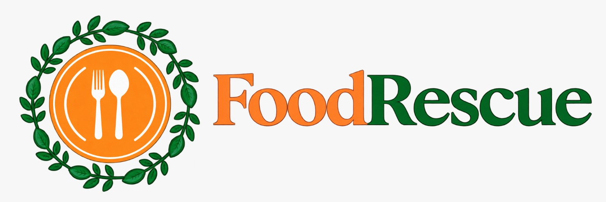

Vision
To build a more mindful and sustainable food consumption culture.

FoodRescueABOUT FOODRESCUE
A student-driven initiative to reduce food waste and build more responsible food consumption habits for a better and more sustainable world.

FoodRescue is an educational website that provides knowledge, practical guidance, and real actions to raise awareness about food waste, especially among university students.
To build a more mindful and sustainable food consumption culture.

Our main focus is encouraging more responsible and sustainable food use.

By helping reduce edible food waste and supporting food availability.

By minimizing food waste, we also help lower greenhouse gas emissions.
FoodRescue will continue to grow into a more comprehensive platform that makes it easier to share and distribute surplus food.